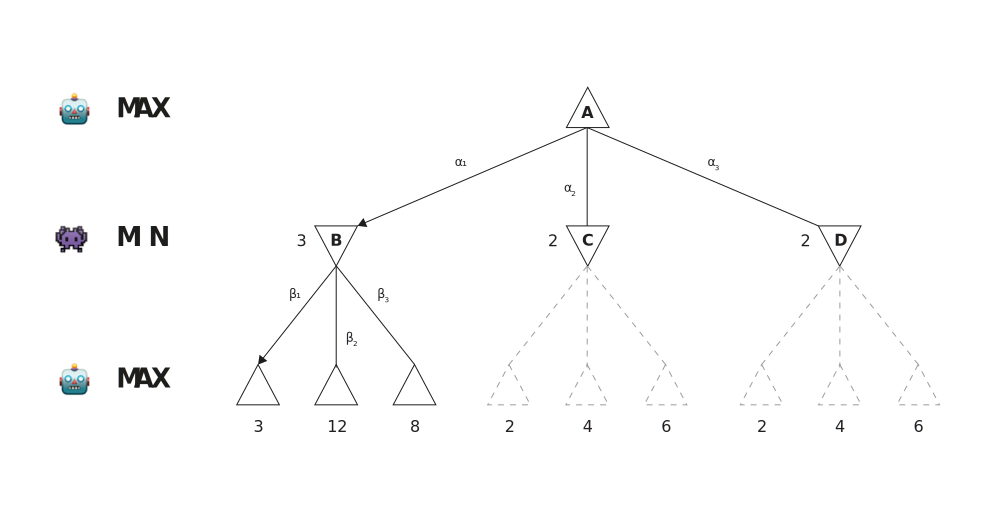
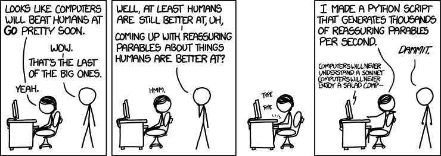

Games
ü߆ Introduction to AI ‚Äî I2AI_4
Competitive environments
Playful superiority
Adversarial search
In competitive environments, two or more agents have conflicting goals.
This gives rise to adversarial search problems.
The AI community is particularly interested in games of a simplified nature (e.g., chess, go, and poker).
- State of a game is easy to represent
- Agents are restricted to a few actions
- Effects of actions are defined by precise rules
Deterministic games
The games most commonly studied within AI are deterministic (two-player, turn-taking, fully observable, zero-sum1) (Russel and Norvig 2022, 192).
Possible formalization
- States:
S(start atS₀) - Player:
TO-MOVE(s)(defines which player has the move in states) - Actions:
ACTIONS(s)(the set of legal moves in states) - Transition model:
RESULT(s,a)(defines the state resulting from actionain states) - Terminal test:
IS-TERMINAL(s)(is true when the game is over2) - Utility function:
UTILITY(s,p)(defines the final numeric value to playerpwhen the game ends in terminal states)
The initial state, ACTIONS function, and RESULT function define the state space graph, where the vertices are states, the edges are moves and the state might be reached by multiple paths.
Optimal decisions
Players (here MIN and MAX, alternate turns) need to have a conditional plan—a contingent strategy specifying a response to each move of the opponent.
- For games with binary outcomes (win or lose), AND-OR search can be used
(see Russel and Norvig 2022, 143) - For games with multiple outcome scores, the minimax search algorithm is used
Minimax search
Minimax value
Given a state-space search tree, each node’s minimax value is calculated.
The minimax value is the best achievable utility of being in a given sate (against a rational adversary).
MAXprefers to move to a state of maximum value
MINprefers to move to a state of minimum value
Adversarial game tree

The △ nodes are “MAX nodes”, in which it is MAX’s turn to move; the ▽ nodes are “MIN nodes”. MAX’s best move at the root is α₁ (highest minimax value), MIN’s best move is β₁ (lowest minimax value).
Minimax search algorithm
The minimax algorithm performs a complete depth-first exploration of the game tree (Russel and Norvig 2022, 196–96).
- Assumes that the adversary plays optimal
- Returns action whose terminal state has the optimal
MINIMAXvalue- If the state is a terminal state (
IS-TERMINAL(s) = true):
return the state’s utility (UTILITY(s,p)) - If the next agent is
MAX(TO-MOVE(s) = MAX):
returnMAX-VALUE(s) - If the next agent is
MIN(TO-MOVE(s) = MIN):
returnMIN-VALUE(s)
- If the state is a terminal state (
The exponential complexity makes the miminmax algorithm impractical for complex games (even with alpha-beta pruning applied; chess game tree size > atoms in the universe).
Pruning stops the search at the moment when it is determined that the value of a subtree is worse than the best solution already identified.
The general principle is as follows: consider a node n somewhere in the tree, such that Player has a choice of moving to n. If Player has a better choice either at the same level or at any point higher up in the tree, then Player will never move to n. So enough about n is found out (by examining some of its descendants) to reach this conclusion, it can be pruned (Russel and Norvig 2022, 198).
Alpha-beta pruning gets its name from the two extra parameters in MAX-VALUE(state,α,β) that describe the bounds on the backed-up values that appear anywhere along the path:
- α = the value of the best choice for
MAXfound so far (“at least”) - β = the value of the bast choice for
MINfound so far (“at most”)
Alpha-beta search updates the values of α and β as it goes along and prunes the remaining branches at a node as soon as the value of the current node is known to be worse than the current α and β for MAX or MIN, respectively.
Monte Carlo tree search
Monte Carlo tree search (MCTS) does estimate the value of a state as the average utility3 over a number of simulations of complete games starting from the current state (Russel and Norvig 2022, 207–9).
Each iteration follows four steps:
- Selection (choosing a move4, leading to a successor node, and repeat that process, moving down the tree to a leaf)
- Expansion (one to several new children are created for the selected node)
- Simulation (a simulation for the newly generated child node is performed)
- Back-propagation (the result of the simulation is used to update all the search tree nodes going up to the root)
Repeats for a set number of iterations or until a given time is over
Selection
Figure 2 shows a tree with the root representing a state where P-A has won 37/100 playouts done
P-Bselects a move to a node where it has won 60/79 playouts- This is the best win percentage among the available moves
P-Awill select a move to a node where it has won 27/35 playouts (assuming it plays optimally)
It would also have been reasonable to select the 2/11 node for the sake of exploration—with only 11 playouts, the node still has high uncertainty in its valuation, and might end up being the best option if more information about it is gained.
Selection policy example
Upper confidence bounds applied to trees (UCT) is a very effective selection policy ranking possible moves based on an upper confidence bound formula (UCB1)
is the total utility of all playouts that went through node
is the number of playouts through node
is the parent node of
in the tree
is the average utility of
higher for
(exploration term, “how much has the child be ‘ignored’?”)is a constant that balance exploitation and exploration (theoretically
)
With , the 60/79 node in Figure 2 has the highest UCB1 score, but with
, it would be the 2/11 node.
The conventional wisdom has been that Monte Carlo search has an advantage over Heuristic Alpha-Beta Tree Search (not discussed here, see (Russel and Norvig 2022, 202ff)) for games where the branching factor is very high (and thus alpha-beta can’t search deep enough), or when it is difficult to define a good evaluation function 5.
Expansion and simulation
Figure 3 shows a tree where a new child of the selected node is generated and marked with 0/0 (expansion).
Back-propagation
The result of the simulation is used to update all the search tree nodes going up to the root.
P-B'snodes are incremented in both the number of wins and the number of playoutsP-A'snodes are incremented in the number of playouts only
Summary
Summary
- In two-player, discrete, deterministic, turn-taking zero-sum games with perfect information, the minimax algorithm can select optimal moves by a depth-first search in the game tree
- Efficiency can be improved by using the alpha-beta search algorithm, which eliminates subtrees that are shown to be irrelevant.
- Monte Carlo tree search evaluates states by playing out the game all the way to the end to see who won. This playout simulation is repeated multiple times. The evaluation is an average of the results.
Concluding remarks (XKCD)

✏️ Exercises
I2AI_4 E1
Explain in your own words the following terms:
- Zero-sum
- Terminal test
- Minimax value
- Selection policy
- Playout policy
- Monte Carlo tree
- Back-propagation
I2AI_4 E2
Explain if the MINIMAX algorithm is complete and optimal.
Can it be beaten by an opponent playing suboptimally? Why (not)?
Come up with a game tree in which MAX can do still better using a suboptimal strategy against a suboptimal MIN.
I2AI_4 E3
Read the note about pruning (and consult Russel and Norvig (2022) if necessary).
Explain in your own words, under what conditions a subtree is skipped using Alpha-beta pruning.
Draw an example (game search tree, 3 levels depth).
References
Footnotes
Means that what is good for one player is just as bad for the other: there is no “win-win” outcome↩︎
States where the game has ended are called terminal states↩︎
guided by the selection policy↩︎
For games with binary outcomes, average utility equals win percentage↩︎
A heuristic evaluation function returns an estimate of the expected utility of state
sto playerp.↩︎Playout policies biases the moves toward good ones. For Go and other games, playout policies have been successfully learned from self-play by using neural networks. Sometimes also game-specific heuristics are used (e.g., take the corner square in Othello)↩︎